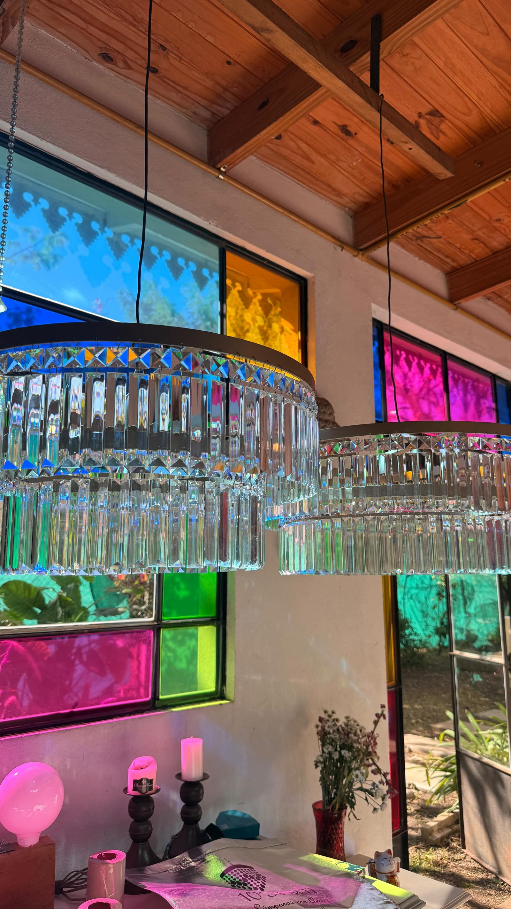
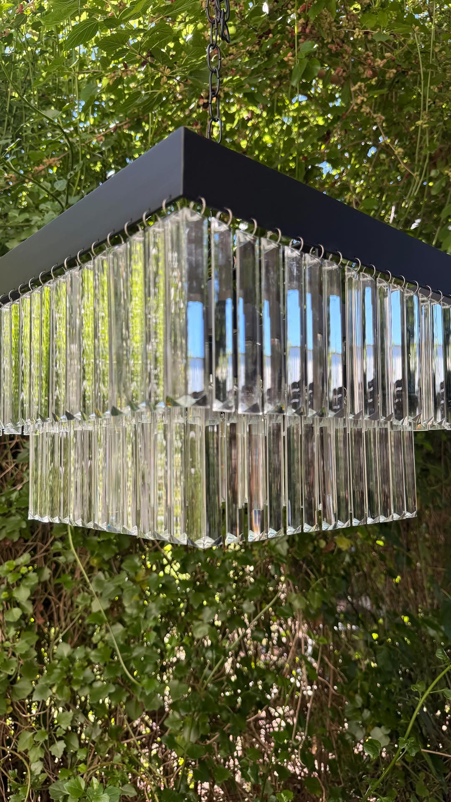
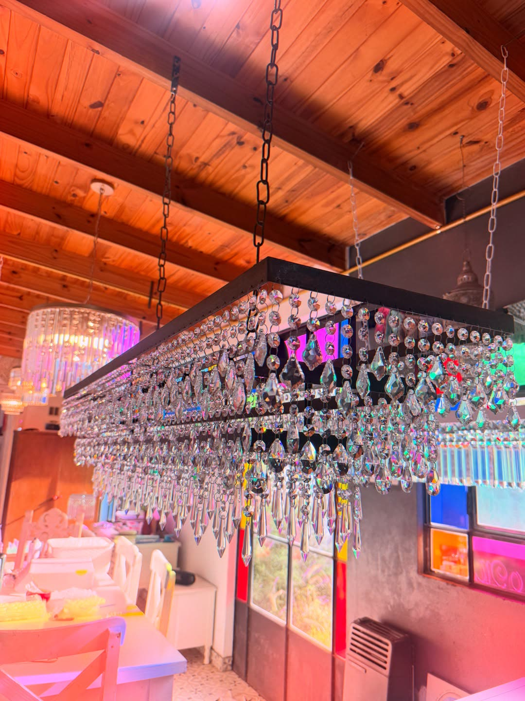
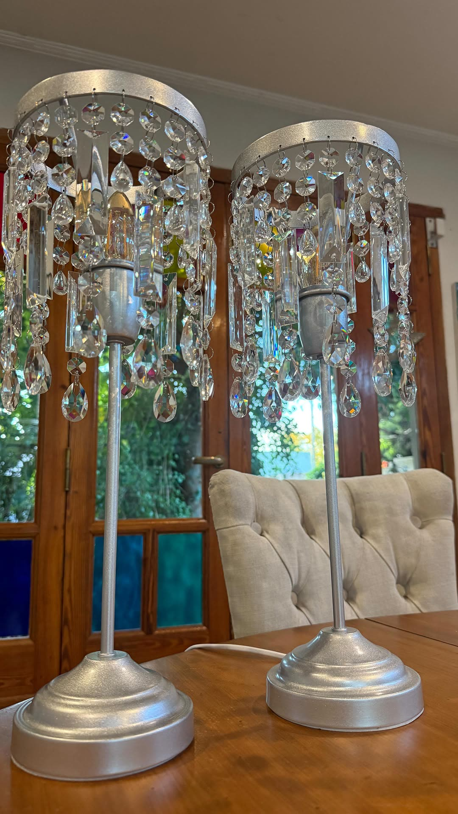
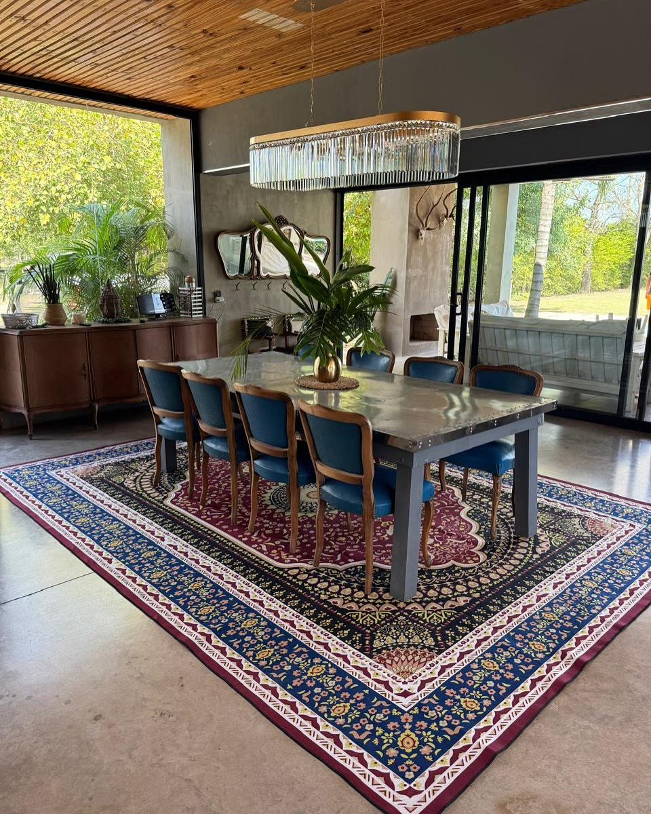
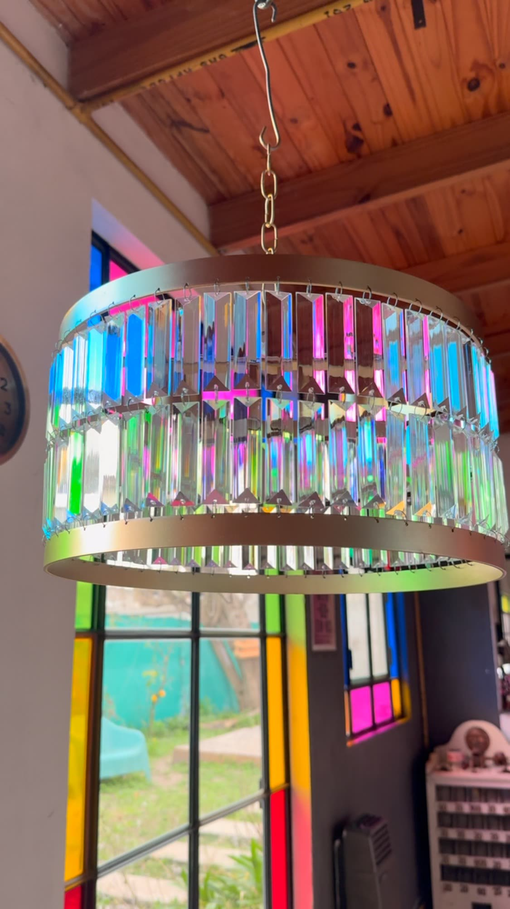

Una lámpara no ilumina una casa. La enciende por dentro.
Lo que flota en el fondo no es un render: son las lámparas reales del taller, filmadas entre los árboles de su jardín en La Plata.
El material, en serio



De la lámpara de pisos al velador



Alegrá tu casa, alegrá tu vida.
Encender el catálogoVersión inmersiva — experiencia premium de Human Glitche sobre su motor UMBRAL: 131.072 partículas de luz de vela y un portal de video con los reels reales del Instagram de 10Mil11. El catálogo completo, a un clic.